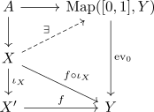
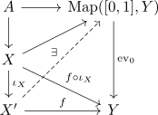

composition of cofibrations
Proposition
Let $A,X,X'$ be topological spaces, $\iota_A: A \rightarrow X$ and $\iota_X: X \rightarrow X'$ be cofibrations. Then
\begin{align*}
\iota_X \circ \iota_A: A \rightarrow X'
\end{align*}
is also a cofibration
Proof
Let $Y$ be a topological space and $H: A \times [0,1] \rightarrow Y$ be a homotopy. Then by assumption of $\iota: A \rightarrow X$, there exists a Homotopy $H_X: X \times [0,1] \rightarrow Y$. Analogously, there exists a Homtoopy $H_{X'}: X' \times [0,1] \rightarrow Y$. Hence $\iota_X \circ \iota_A$ is a cofibration
alternatively
hence by Homotopy Extension Property

and again
